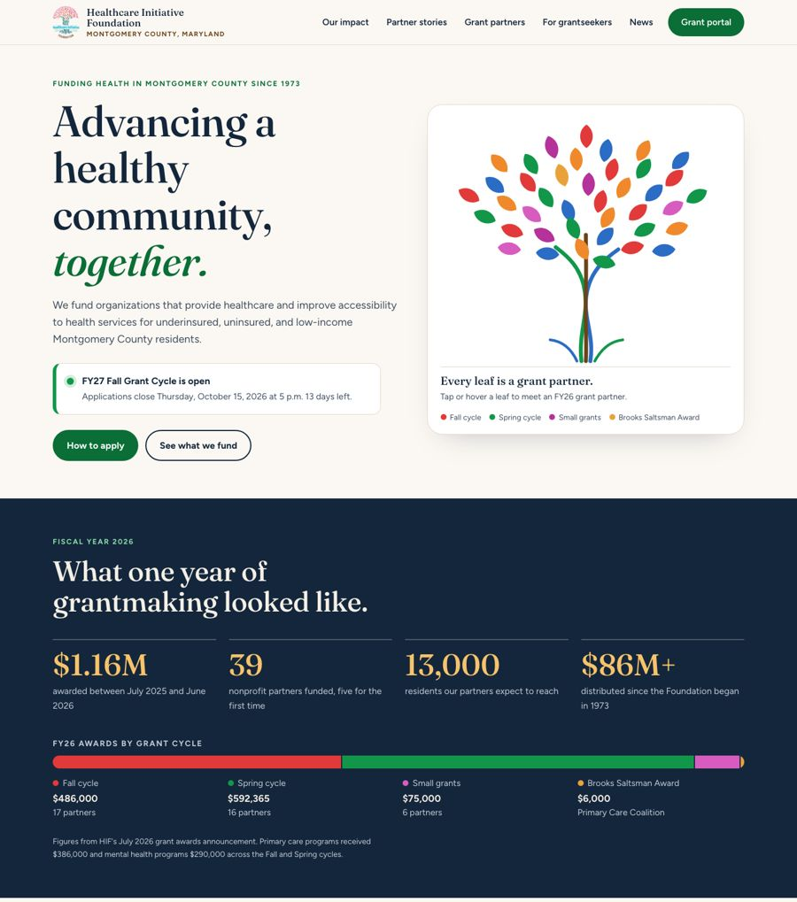

Submitted to Healthcare Initiative Foundation leadership at Communication@hifmc.org.
| Reference name | Phone | |
|---|---|---|
| Reference 1: name, organization | phone | |
| Reference 2: name, organization | phone | |
| Reference 3: name, organization | phone |
All three are partners Williams Digital has worked with in the last three years.
Williams Digital is a small web design and development studio led by Dylan Williams. We would build HIF a WordPress site that staff can update on their own, that tells grant partners' stories with photographs taken in Montgomery County, and that makes the grant calendar the easiest thing to find.
Before writing this, we read hifmc.org, the FY26 awards announcement, and the FY27 grant cycle newsletter. Three things stood out, and each one shaped the concept we built.
Dylan designs and builds every site himself and stays on as the support contact after launch. Recent work most relevant to HIF:
Our sites are hand-coded, mobile-first, and light, with no page-builder layer between staff and their content. For HIF we would stay on WordPress, which your team already knows, and replace the current page builder with a small custom theme. Staff would edit labeled fields ("Grant cycle opens," "Partner name," "Story photo") and the layout would hold.
On most projects we write or rewrite the site's words along with the design, because the two cannot be separated. Our method is simple: interview the people closest to the work, find the plain sentence underneath the formal one, and test it on someone outside the organization. For HIF that means a short voice guide (how HIF sounds, words to use and avoid, how to describe a grant in two sentences) and page copy for the mission, vision, guidelines, strategic priorities, and grantmaking calendar, drafted with staff and approved by the board. The concept's "How to apply" section is an example: HIF's own guidelines, rewritten as four steps.
Dylan works full time in ministry, so he knows nonprofit teams from the inside: small staffs, board approvals, and websites that have to be maintained by people with other jobs to do. Williams Digital's nonprofit and community work includes a donated website for Among the Nations, a missions nonprofit, built from the organization's own stories and field partners and now in final preparation for launch, and the Vestlake community association site described above.
We want to be direct about one thing. We have not yet built a site for a grantmaking foundation, and our health-focused work is the Senn Medicine site now under contract, for a medical practice and not a funder. What we bring is the work this RFP describes: listening to partners, writing clearly, building something staff can run, and treating accessibility as a requirement. The concept is our evidence that we can learn a foundation's world quickly and represent it accurately.
We are based in Alabama, so we will not claim a neighbor's knowledge. Here is what we have learned, and how we would close the gap.
| RFP deliverable | What HIF receives |
|---|---|
| Mobile-responsive website | A WordPress site designed for phones first, with a partner story library, a grant recipient directory by year, and grantmaking strategy pages. |
| Communication style and language | A voice guide and approved copy for mission, vision, guidelines, priorities, and calendar. |
| Templates and style guide for social media | A style guide built from the existing logo, and an editable template kit (grant announcements, partner spotlights, event and deadline posts) in the tool staff already use. |
| Interviews | Recorded conversations with board, staff, and grant partners, summarized in a short findings memo HIF keeps. |
| Content migration | Every current page reviewed with staff and marked keep, rewrite, or retire. Newsletter archive and grantee lists from FY18 onward carried over, with redirects so old links keep working. |
| RFP deliverable | What HIF receives |
|---|---|
| Staff training | Two live sessions, recorded, and a written guide with screenshots for the tasks staff do most. |
| Search engine optimization | Clean page titles and descriptions, a sitemap, and analytics with a simple view of visits and sources. |
| Photo and media consent process | A written process and signed release forms, including parent or guardian consent for minors, coordinated with each partner's own protocols. Every photo on the site is logged against its release. No release, no photo. |
| Local photography | We hire and direct a Montgomery County photographer for two shoot days at partner sites and around the county. HIF owns the licensed images. |
| Social media and grant software | HIF's newest Facebook and LinkedIn posts appear on the site automatically. The Foundant grant portal is one click from every page, with clear "what you will need" guidance before partners leave the site. |
We build to WCAG 2.2 Level AA: color contrast, keyboard access, visible focus, text alternatives, readable type, and reduced motion. We test with automated tools and by hand with a screen reader, and give HIF a written report. We would meet HIF's IT security team at kickoff, agree on hosting, accounts, backups, and updates in writing, and have them review the site before launch.
HIF owns everything: the theme, source files, copy, photographs, templates, and all accounts.
Assumes a partner is selected by January 15, 2027, with launch by June 1, 2027.
| When | Phase | What happens |
|---|---|---|
| Jan 18 – Feb 12 | Listen | Kickoff, meeting with IT security, content audit, and interviews with board, staff, and grant partners. |
| Feb 15 – Mar 5 | Message and structure | Voice guide, site map, and key page copy drafted with staff. Consent process and release forms approved. |
| Mar 8 – Apr 2 | Design | Homepage and page templates, style guide, and social templates. Photography days scheduled with partners. |
| Apr 5 – May 7 | Build and migrate | WordPress theme, content migration, social and Foundant links, search setup. |
| May 10 – May 21 | Review and train | Accessibility testing, IT security review, staff training, and a board walkthrough. |
| May 24 – May 28 | Launch | Go live ahead of the June 1 goal, followed by 30 days of included support. |
The spring grant cycle opens around March, when staff time is short, so interviews and copy approvals come before it.
A fixed price for the full scope in the RFP. Only the photography line is an allowance, billed at the photographer's actual cost.
| Deliverable | Includes | Cost |
|---|---|---|
| Discovery and interviews | Content audit, interviews with board, staff, and grant partners, findings memo | $2,800 |
| Content strategy and communication style | Voice guide, site map, and copy for the key pages | $3,200 |
| Website design and development | Custom WordPress theme, story library, grant recipient directory, grant calendar, news | $9,800 |
| Content migration | Page review with staff, newsletter archive, grantee lists FY18 onward, redirects | $1,600 |
| Style guide and social media templates | Brand style guide from the existing logo, editable social template kit | $1,900 |
| Photography services | Local photographer for two shoot days, licensing, and coordination. Allowance, billed at cost. Lower if HIF has its own photographer. | $4,200 |
| Photo and media consent process | Written process, release forms including minors, release log | $500 |
| Search, analytics, and integrations | Search engine setup, analytics, social feeds, Foundant portal links | $900 |
| Accessibility and security review | WCAG 2.2 AA testing and report, work with HIF's IT security team | $800 |
| Staff training and launch support | Two recorded sessions, written guide, 30 days of support | $600 |
| Total project cost | $26,300 | |
Payment schedule: 30% at signing, 40% at design approval, 30% at launch.
Hourly rate for work beyond this scope: $95 per hour, quoted and approved in writing before any work begins.
| Item | Detail | Cost |
|---|---|---|
| On-site visit (optional) | Dylan travels to Montgomery County for the photography days and in-person interviews | $1,400 |
| Website hosting | HIF keeps its current hosting account, so we add no hosting fee. | No change |
| CMS licensing | WordPress is open source. The custom theme has no license fee. | $0 |
| Plugins | We avoid paid plugins. HIF approves any that are needed. | Up to $150 per year |
| Care plan (optional) | Updates, backups, monitoring, and one hour of small edits each month | $75 per month |
williamsdigital.io/preview/healthcare-initiative-foundation/

Every fact on the page comes from hifmc.org and HIF newsletters. Photographs are HIF's own, from its 50th anniversary. The concept is unlisted and hidden from search engines.